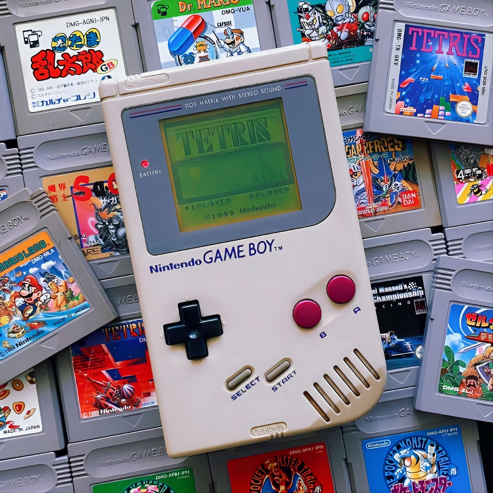

The Dawn of Portable Gaming
While handheld gaming began with rudimentary LED devices in the late 1970s, true interchangeable cartridge systems kicked off with the Milton Bradley Microvision in 1979. However, the industry truly exploded in 1989 with the release of the Nintendo Game Boy. Packaged with Tetris, it offered long battery life and a durable design that completely dominated technically superior, full-color competitors like the Atari Lynx and Sega Game Gear, which famously devoured AA batteries in a matter of hours.
As the 90s progressed, hardware manufacturers tried to push the boundaries of what portable consoles could do. Devices like the Sega Nomad allowed players to plug actual home console cartridges directly into a handheld, though size and battery constraints held it back. Eventually, the Game Boy Color and Game Boy Advance pushed 16-bit era, console-quality graphics straight into players' pockets, cementing Nintendo's absolute dominance in the space.
In 2004, the handheld market saw a massive shift with the introduction of the Nintendo DS and the Sony PlayStation Portable (PSP). The DS introduced touch-screen controls, a microphone, and dual-screen gaming, ultimately becoming the best-selling handheld console of all time. Meanwhile, the PSP proved there was a massive market for high-fidelity portable gaming by offering near-PS2 quality 3D graphics, optical UMD discs, and multimedia movie playback.

The Smartphone Threat & PC Revolution
The late 2000s introduced the biggest threat to dedicated handhelds: smartphones. With the rise of mobile app stores, casual gamers flocked to cheap, accessible phone games. Dedicated console makers had to adapt. Nintendo introduced the 3DS, featuring glasses-free 3D technology, while Sony released the PlayStation Vita, boasting a gorgeous OLED screen and dual analog sticks.
Eventually, the Nintendo Switch (2017) revolutionized the industry by erasing the line entirely between the home console and the portable device. Today, we have entered the era of the portable PC. Devices like the Steam Deck, ASUS ROG Ally, and Lenovo Legion Go allow gamers to play massive, modern AAA PC libraries on the go, proving that handhelds are no longer a secondary way to play, but a premium gaming destination.